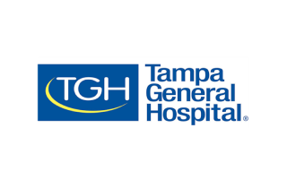

Palantir for Hospitals
为医疗一线带来速度与影响力的 AI 平台。
面向医院的 AI 驱动操作系统。
将 AI 驱动的自动化融入您复杂的医疗工作流程。

转型之旅始于 Palantir。

我们正努力与 Palantir 开展更广泛的合作……其用途无穷无尽。
- 合作伙伴
- 西奈山卫生系统
- 概述
作为纽约市最大的医院网络，西奈山卫生系统借助 Palantir 构建解决方案，使其能够在多个工作流程中做出数据驱动的决策，并改善财务和患者治疗成效。
- 我们合作成果的示例
确定项目资格 → 构建一个系统，实时评估患者病历，以确定哪些患者可能符合居家护理条件，帮助临床医生做出基于数据的资格判定。 [led to +400% increase in admissions per month to Hospital at Home]
临床拒付管理 → 利用现有本体论快速实现拒付信创建的自动化并加快流程。 [使拒付信管理的全时当量效率达到 100%，创建时间从 45-60 分钟缩短至 8 分钟]


Palantir 将处于我们所做一切工作的核心位置……[该平台]是我们的战略差异化优势。
- 合作伙伴
- 坦帕总医院
- 概述
通过与 Palantir 的前沿部署工程师团队合作，坦帕总医院 (TGH) 得以将其海量数据集中到单一事实来源中，并借此帮助缩短患者的住院时间，开展挽救生命的工作。
- 我们合作成果的示例
智能的患者与人员配置 → TGH 利用 Palantir 在其麻醉后监护室中驱动预测分析，确保在 1200 – 1300 名患者之间准确分配其 1100 张床位，并大幅减少此前完成这项任务所需的人工工作。
临床人员与环境服务人员配置 → 实时可视化实际与目标护患比，为当日机动调配和长期人员配置提供依据，估计节省了超过 100 万美元的人工开支，环境服务外包支出减少 57%，环境服务清洁周转时间缩短 25%。


医疗行业……落后了，我们正在努力追赶，我认为 Palantir 团队在帮助 HCA Healthcare 追赶方面做得非常出色。运用技术和 AI 将帮助我们实现跨越式前进。
- 合作伙伴
- HCA Healthcare
- 概述
HCA 的核心使命是关爱患者并改善他们的生活，其中一部分体现为对技术驱动的创新、互联和转型的持续投入。HCA 的护理转型与创新团队与 Palantir 合作，快速扩展其临床集成工作，并使其解决方案能够持续演进。
- 我们合作成果的示例
自动化人员配置与动态排班 → 护士和首席护理官可以使用 AIP 的自动排班功能生成均衡的轮班计划，综合考虑护士偏好、决策成本和需求预测，以平衡众多利益相关者的需求与能力。
智能人员配置 → 在自动生成排班计划后，HCA 的排班工具可以适应现实中的突发情况（如人员或患者需求变化），并持续提出前瞻性建议，以实现人员配置的最优平衡。


Palantir 不仅愿意解决最难的问题，而且实际上乐在其中，而不是向我们推销现成的解决方案。
- 合作伙伴
- 克利夫兰诊所
- 概述
克利夫兰诊所利用 Palantir 构建了一个覆盖医院运营各个方面的医疗服务平台。这包括简化患者床位分配和出院管理以缩短等待时间和住院时长，调整人员配置以促进最优护理，以及优化关键资源（如手术室时段）的利用。
- 我们合作成果的示例
容量管理 → 将患者床位的实时和预测需求与人员配备洞察相结合，可以更早、更全面地了解整个医院的床位需求，最终提高转诊患者的收治率，并缩短急诊科（ED）和麻醉后监护室（PACU）的滞留时间。
主动人员配置： 以患者护理和护士满意度为核心，这些新工具为护理管理者提供了平衡排班和优化资源所需的洞察，能够主动推荐当天的解决方案，并呈现下游影响。

这可以改变社会的结构……
- 合作伙伴
- 医院 AI 智库
- 概述
在 2024 年 9 月的 AIPCon 上，Palantir for Hospitals 主办了一场医院 AI 智库活动，来自美国各大医疗中心的领导者齐聚一堂，分享当前经验，并就前线 AI 落地运营的下一步达成共识。





让 AI 从后台走向床旁。
Capacity Management
实时、集中地管理波动的容量需求。构建自定义工作流，整合患者流转数据，创建互联的容量管理唯一可信数据源。
西奈山卫生系统急诊科的居家医院项目收治量增加 400%。
在坦帕总医院，PACU 滞留时间缩短超过 28%，患者安置时间缩短 83%。
在克利夫兰诊所，仅主院区的日均医院转诊量就增加了 7.6%，每次急诊入院的急诊滞留时间平均缩短 38 分钟。
在内布拉斯加医学中心，前往出院休息室的患者增加了 2000%，每天可识别约 50 名符合条件的患者。
Revenue Cycle Management
自动化收入周期管理流程。配置工作流，利用临床记录和电子健康档案（EHR）中的数据，识别已提供服务的报销不准确之处，并自动与付款方闭环沟通，以获得准确、及时的付款。
西奈山卫生系统的全职员工（FTE）申诉信撰写效率提升 100% 以上。
通过 AI 工作流，为纽约市卫生系统识别并归类了 1800 万美元的报销以及 1700 万美元的年度化收费价值。
西奈山卫生系统应收账款（AR）翻转率提升 3%（90 天后队列），带来 790 万美元的年度化价值。
在内布拉斯加医学中心，收入周期流程得到简化，撰写和审核一封申诉的时间缩短至使用 Palantir 之前的 20%（从 15 分钟缩短到 3 分钟）。
Staffing & Scheduling
将现实世界中的人员配备和排班复杂性进行编码。通过覆盖人员配备全生命周期（从提前排班到当日运营）的需求洞察，实现跨病区、手术室、设施等的智能、主动式医院人员配备。
HCA Healthcare 拥有 3 万名活跃用户，涵盖从一线员工到高管。
在一家大型医院节省了 600 万美元的护理成本。
在 HCA Healthcare，护士排班的管理负担减少了 90% 以上。
在克利夫兰诊所，骨科手术室闲置时间减少了 40%。
在坦帕总医院，护士人员配备比例达标率提升了 30%。